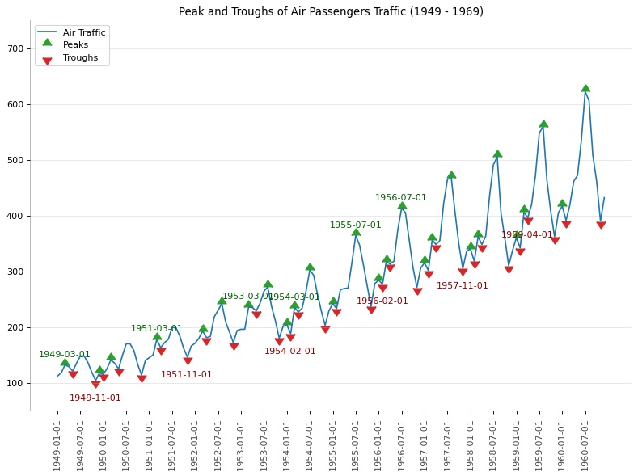
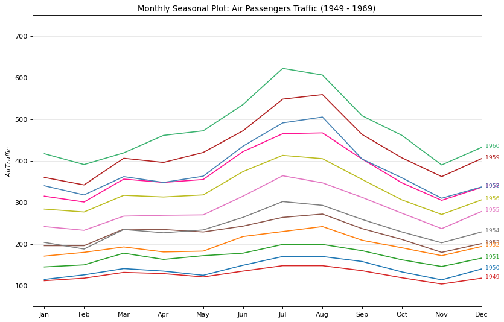
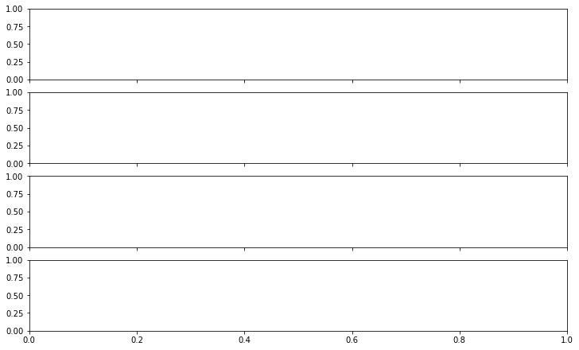
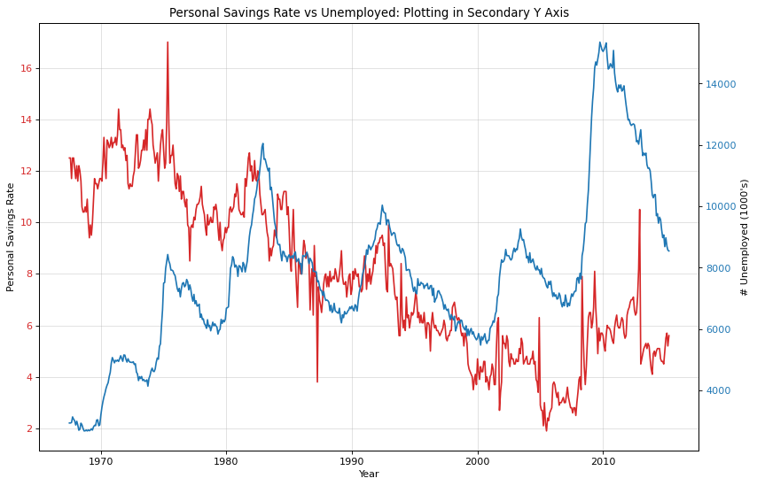
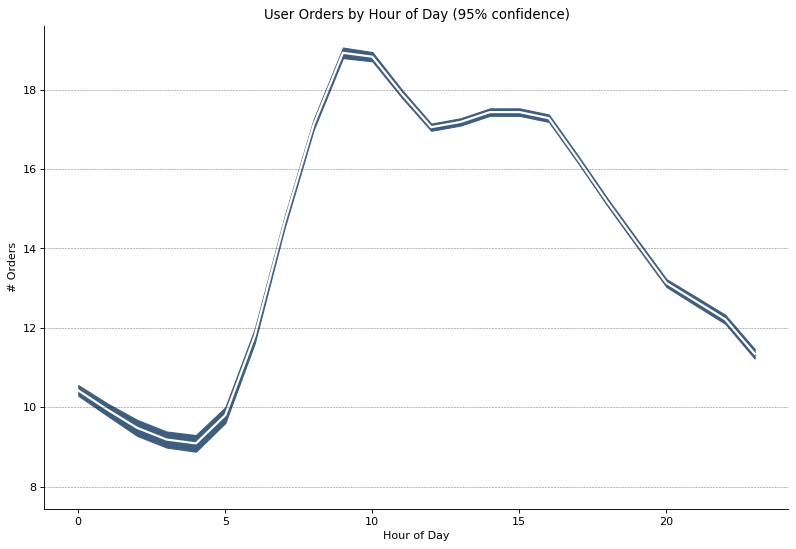
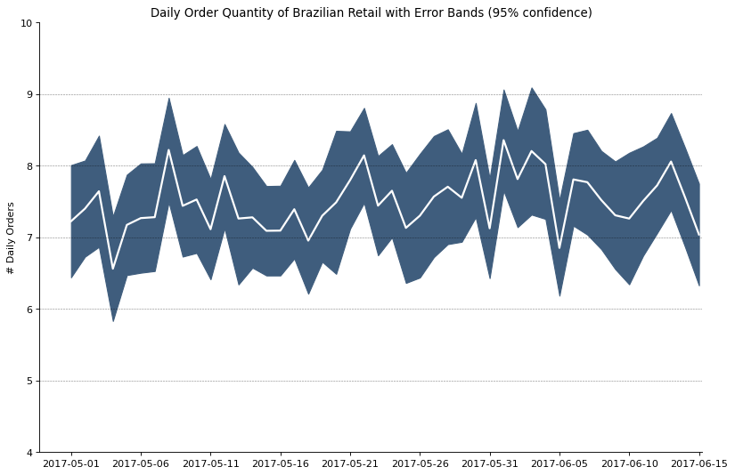
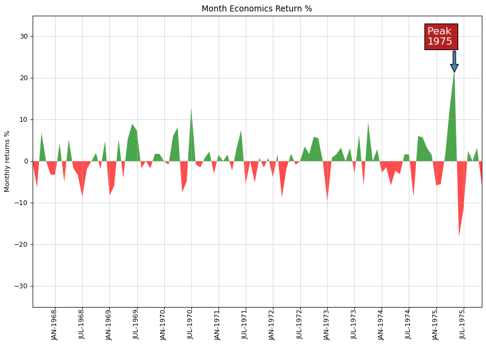
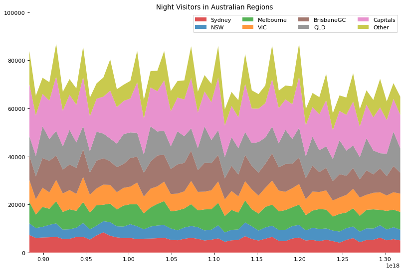
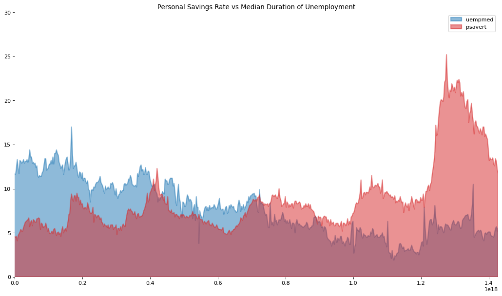

Time Series
Contents
Time Series¶
import matplotlib.pyplot as plt
import numpy as np
import pandas as pd
from dateutil.parser import parse
Peaks¶
passengers = pd.read_csv('../../datasets/stats/air_passengers.csv')
passengers.head()
| date | value | |
|---|---|---|
| 0 | 1949-01-01 | 112 |
| 1 | 1949-02-01 | 118 |
| 2 | 1949-03-01 | 132 |
| 3 | 1949-04-01 | 129 |
| 4 | 1949-05-01 | 121 |
traffic = passengers.value
doublediff = np.diff(np.sign(np.diff(traffic)))
peak_locations = np.where(doublediff == -2)[0] + 1
doublediff2 = np.diff(np.sign(np.diff(-1 * traffic)))
trough_locations = np.where(doublediff2 == -2)[0] + 1
import matplotlib as mpl
_, ax = plt.subplots(figsize=(12, 8), dpi=80)
ax.plot('date',
'value',
data=passengers,
color='tab:blue',
label='Air Traffic')
ax.scatter(passengers.date[peak_locations],
passengers.value[peak_locations],
marker=mpl.markers.CARETUPBASE,
color='tab:green',
s=100,
label='Peaks')
ax.scatter(passengers.date[trough_locations],
passengers.value[trough_locations],
marker=mpl.markers.CARETDOWNBASE,
color='tab:red',
s=100,
label='Troughs')
for t, p in zip(trough_locations[1::5], peak_locations[::3]):
ax.text(passengers.date[p],
passengers.value[p] + 15,
passengers.date[p],
horizontalalignment='center',
color='darkgreen')
ax.text(passengers.date[t],
passengers.value[t] - 35,
passengers.date[t],
horizontalalignment='center',
color='darkred')
xtick_location = passengers.index.tolist()[::6]
xtick_labels = passengers.date.tolist()[::6]
ytick_labels = passengers.value.tolist()[::6]
ax.set(ylim=(50, 750))
ax.set_xticks(ticks=xtick_location)
ax.set_xticklabels(labels=xtick_labels, rotation=90, alpha=.7)
ax.set(title='Peak and Troughs of Air Passengers Traffic (1949 - 1969)')
ax.spines['top'].set_alpha(.0)
ax.spines['bottom'].set_alpha(.3)
ax.spines['right'].set_alpha(.0)
ax.spines['left'].set_alpha(.3)
ax.legend(loc='upper left')
ax.grid(axis='y', alpha=.3)
plt.show()

Seasonal¶
passengers['year'] = [parse(d).year for d in passengers.date]
passengers['month'] = [parse(d).strftime('%b') for d in passengers.date]
years = passengers['year'].unique()
mycolors = [
'tab:red', 'tab:blue', 'tab:green', 'tab:orange', 'tab:brown', 'tab:grey',
'tab:pink', 'tab:olive', 'deeppink', 'steelblue', 'firebrick',
'mediumseagreen'
]
_, ax = plt.subplots(figsize=(12, 8), dpi=80)
for i, y in enumerate(years):
ax.plot('month',
'value',
data=passengers.loc[passengers.year == y, :],
color=mycolors[i],
label=y)
ax.text(passengers.loc[passengers.year == y, :].shape[0] - .9,
passengers.loc[passengers.year == y, 'value'][-1:].values[0],
y,
fontsize='small',
color=mycolors[i])
ax.set(xlim=(-0.3, 11),
ylim=(50, 750),
ylabel='$Air Traffic$',
title="Monthly Seasonal Plot: Air Passengers Traffic (1949 - 1969)")
ax.grid(axis='y', alpha=.3)
plt.show()

Cross Correlation¶
import statsmodels.tsa.stattools as stattools
---------------------------------------------------------------------------
ModuleNotFoundError Traceback (most recent call last)
Input In [8], in <cell line: 1>()
----> 1 import statsmodels.tsa.stattools as stattools
ModuleNotFoundError: No module named 'statsmodels'
mortality = pd.read_csv('../../datasets/stats/mortality.csv')
mortality.head()
| date | mdeaths | fdeaths | |
|---|---|---|---|
| 0 | Jan 1974 | 2134 | 901 |
| 1 | Feb 1974 | 1863 | 689 |
| 2 | Mar 1974 | 1877 | 827 |
| 3 | Apr 1974 | 1877 | 677 |
| 4 | May 1974 | 1492 | 522 |
x = mortality['mdeaths']
y = mortality['fdeaths']
ccs = stattools.ccf(x, y)[:100]
nlags = len(ccs)
conf_level = 2 / np.sqrt(nlags)
_, ax = plt.subplots(figsize=(12, 8), dpi=80)
ax.hlines(0, xmin=0, xmax=100, color='gray')
ax.hlines(conf_level, xmin=0, xmax=100, color='gray')
ax.hlines(-conf_level, xmin=0, xmax=100, color='gray')
ax.bar(x=np.arange(len(ccs)), height=ccs, width=.3)
ax.set(xlim=(0, len(ccs)),
title='$Cross\ Correlation\ Plot:\ mdeaths\ vs\ fdeaths$')
plt.show()
---------------------------------------------------------------------------
NameError Traceback (most recent call last)
Input In [10], in <cell line: 4>()
1 x = mortality['mdeaths']
2 y = mortality['fdeaths']
----> 4 ccs = stattools.ccf(x, y)[:100]
5 nlags = len(ccs)
7 conf_level = 2 / np.sqrt(nlags)
NameError: name 'stattools' is not defined
Decomposition¶
from statsmodels.tsa.seasonal import seasonal_decompose
---------------------------------------------------------------------------
ModuleNotFoundError Traceback (most recent call last)
Input In [11], in <cell line: 1>()
----> 1 from statsmodels.tsa.seasonal import seasonal_decompose
ModuleNotFoundError: No module named 'statsmodels'
passengers = pd.read_csv('../../datasets/stats/air_passengers.csv')
passengers.head()
| date | value | |
|---|---|---|
| 0 | 1949-01-01 | 112 |
| 1 | 1949-02-01 | 118 |
| 2 | 1949-03-01 | 132 |
| 3 | 1949-04-01 | 129 |
| 4 | 1949-05-01 | 121 |
date = passengers['date'].astype('datetime64')
dates = pd.DatetimeIndex(data=date)
passengers.set_index(dates, inplace=True)
result = seasonal_decompose(passengers['value'], model='multiplicative')
---------------------------------------------------------------------------
NameError Traceback (most recent call last)
Input In [13], in <cell line: 6>()
2 dates = pd.DatetimeIndex(data=date)
4 passengers.set_index(dates, inplace=True)
----> 6 result = seasonal_decompose(passengers['value'], model='multiplicative')
NameError: name 'seasonal_decompose' is not defined
fig, axes = plt.subplots(4,
1,
figsize=(10, 6),
sharex=True,
constrained_layout=True)
ys = (result.observed, result.trend, result.seasonal, result.resid)
ylabels = ('Value', 'Trend', 'Seasonal', 'Residual')
for ax, y, ylabel in zip(axes.flatten(), ys, ylabels):
ax.plot(dates, y)
ax.set(ylabel=ylabel)
fig.suptitle('Time Series Decomposition of Air Passengers')
plt.show()
---------------------------------------------------------------------------
NameError Traceback (most recent call last)
Input In [14], in <cell line: 8>()
1 fig, axes = plt.subplots(4,
2 1,
3 figsize=(10, 6),
4
5 sharex=True,
6 constrained_layout=True)
----> 8 ys = (result.observed, result.trend, result.seasonal, result.resid)
9 ylabels = ('Value', 'Trend', 'Seasonal', 'Residual')
11 for ax, y, ylabel in zip(axes.flatten(), ys, ylabels):
NameError: name 'result' is not defined

Doule Y¶
economics = pd.read_csv('../../datasets/stats/economics.csv', parse_dates=['date'])
economics.head()
| date | pce | pop | psavert | uempmed | unemploy | |
|---|---|---|---|---|---|---|
| 0 | 1967-07-01 | 507.4 | 198712 | 12.5 | 4.5 | 2944 |
| 1 | 1967-08-01 | 510.5 | 198911 | 12.5 | 4.7 | 2945 |
| 2 | 1967-09-01 | 516.3 | 199113 | 11.7 | 4.6 | 2958 |
| 3 | 1967-10-01 | 512.9 | 199311 | 12.5 | 4.9 | 3143 |
| 4 | 1967-11-01 | 518.1 | 199498 | 12.5 | 4.7 | 3066 |
x = economics['date']
y1 = economics['psavert']
y2 = economics['unemploy']
_, ax = plt.subplots(figsize=(12, 8), dpi=80)
ax.plot(x, y1, color='tab:red')
# Plot Line2 (Right Y Axis)
ax2 = ax.twinx() # instantiate a second axes that shares the same x-axis
ax2.plot(x, y2, color='tab:blue')
ax.set(xlabel='Year')
ax.tick_params(axis='x', rotation=0)
ax.set(ylabel='Personal Savings Rate')
ax.tick_params(axis='y', rotation=0, labelcolor='tab:red')
ax.grid(alpha=.4)
ax2.set(ylabel='# Unemployed (1000\'s)')
ax2.tick_params(axis='y', labelcolor='tab:blue')
ax2.set(
title='Personal Savings Rate vs Unemployed: Plotting in Secondary Y Axis')
plt.show()

SEM¶
from scipy.stats import sem
orders = pd.read_csv('../../datasets/stats/user_orders_hourofday.csv')
orders.head()
| user_id | order_hour_of_day | quantity | |
|---|---|---|---|
| 0 | 1 | 7 | 20 |
| 1 | 1 | 8 | 23 |
| 2 | 1 | 9 | 12 |
| 3 | 1 | 12 | 11 |
| 4 | 1 | 14 | 10 |
orders_mean = orders.groupby('order_hour_of_day').quantity.mean()
orders_se = orders.groupby('order_hour_of_day').quantity.apply(sem).mul(1.96)
x = orders_mean.index
fig, ax = plt.subplots(figsize=(12, 8), dpi=80)
ax.set(ylabel='# Orders')
ax.plot(x, orders_mean, color='white', lw=2)
ax.fill_between(x,
orders_mean - orders_se,
orders_mean + orders_se,
color='#3F5D7D')
ax.spines['top'].set_alpha(0)
ax.spines['bottom'].set_alpha(1)
ax.spines['right'].set_alpha(0)
ax.spines['left'].set_alpha(1)
ax.set(title='User Orders by Hour of Day (95% confidence)')
ax.set(xlabel='Hour of Day')
s, e = ax.get_xlim()
ax.set(xlim=(s, e))
for y in range(8, 20, 2):
ax.hlines(y,
xmin=s,
xmax=e,
colors='black',
alpha=0.5,
linestyles='--',
lw=0.5)
plt.show()

from dateutil.parser import parse
from scipy.stats import sem
orders_45d = pd.read_csv('../../datasets/stats/orders_45d.csv',
parse_dates=['purchase_time', 'purchase_date'])
orders_45d.head()
| purchase_time | purchase_date | quantity | |
|---|---|---|---|
| 0 | 2017-05-16 13:10:30 | 2017-05-16 | 5 |
| 1 | 2017-05-16 19:41:10 | 2017-05-16 | 3 |
| 2 | 2017-05-19 18:53:40 | 2017-05-19 | 2 |
| 3 | 2017-05-18 13:55:47 | 2017-05-18 | 1 |
| 4 | 2017-05-14 20:28:25 | 2017-05-14 | 3 |
orders_mean = orders_45d.groupby('purchase_date').quantity.mean()
orders_se = orders_45d.groupby('purchase_date').quantity.apply(sem).mul(1.96)
x = [d.date().strftime('%Y-%m-%d') for d in orders_mean.index]
_, ax = plt.subplots(figsize=(12, 8), dpi=80)
ax.plot(x, orders_mean, color='white', lw=2)
ax.fill_between(x,
orders_mean - orders_se,
orders_mean + orders_se,
color='#3F5D7D')
ax.spines['top'].set_alpha(0)
ax.spines['bottom'].set_alpha(1)
ax.spines['right'].set_alpha(0)
ax.spines['left'].set_alpha(1)
ax.set(ylabel='# Daily Orders')
ax.set_xticks(np.arange(0, len(x), 5))
ax.set(
title=
'Daily Order Quantity of Brazilian Retail with Error Bands (95% confidence)'
)
s, e = ax.get_xlim()
ax.set(xlim=(s, e - 2), ylim=(4, 10))
for y in range(5, 10, 1):
ax.hlines(y,
xmin=s,
xmax=e,
colors='black',
alpha=0.5,
linestyles='--',
lw=0.5)
plt.show()

Area¶
economics = pd.read_csv('../../datasets/stats/economics.csv', parse_dates=['date'])
x = np.arange(economics.shape[0])
y_returns = (economics.psavert.diff().fillna(0) /
economics.psavert.shift(1)).fillna(0) * 100
_, ax = plt.subplots(figsize=(12, 8), dpi=80)
ax.fill_between(x[1:],
y_returns[1:],
0,
where=y_returns[1:] >= 0,
facecolor='green',
interpolate=True,
alpha=0.7)
ax.fill_between(x[1:],
y_returns[1:],
0,
where=y_returns[1:] <= 0,
facecolor='red',
interpolate=True,
alpha=0.7)
ax.annotate('Peak \n1975',
xy=(94.0, 21.0),
xytext=(88.0, 28),
bbox=dict(boxstyle='square', fc='firebrick'),
arrowprops=dict(facecolor='steelblue', shrink=0.05),
fontsize=15,
color='white')
xtickvals = [
str(m)[:3].upper() + '-' + str(y)
for y, m in zip(economics.date.dt.year, economics.date.dt.month_name())
]
ax.set_xticks(x[::6])
ax.set_xticklabels(xtickvals[::6],
rotation=90,
fontdict={
'horizontalalignment': 'center',
'verticalalignment': 'center_baseline'
})
ax.set(xlim=(1, 100),
ylim=(-35, 35),
title='Month Economics Return %',
ylabel='Monthly returns %')
ax.grid(alpha=0.5)
plt.show()

Stacked Area¶
visitors = pd.read_csv('../../datasets/stats/night_visitors.csv',
parse_dates=['yearmon'])
visitors.head()
| yearmon | Sydney | NSW | Melbourne | VIC | BrisbaneGC | QLD | Capitals | Other | |
|---|---|---|---|---|---|---|---|---|---|
| 0 | 1998-01-01 | 7320 | 21782 | 4865 | 14054 | 9055 | 8016 | 9178 | 10232 |
| 1 | 1998-04-01 | 6117 | 16881 | 4100 | 8237 | 5616 | 8461 | 6362 | 9540 |
| 2 | 1998-07-01 | 6282 | 13495 | 4418 | 6731 | 8298 | 13175 | 7965 | 12385 |
| 3 | 1998-10-01 | 6368 | 15963 | 5157 | 7675 | 6674 | 9092 | 6864 | 13098 |
| 4 | 1999-01-01 | 6602 | 22718 | 5550 | 13581 | 9168 | 10224 | 8908 | 10140 |
mycolors = [
'tab:red', 'tab:blue', 'tab:green', 'tab:orange', 'tab:brown', 'tab:grey',
'tab:pink', 'tab:olive'
]
columns = visitors.columns[1:]
labs = columns.values.tolist()
x = visitors['yearmon'].values.tolist()
y0 = visitors[columns[0]].values.tolist()
y1 = visitors[columns[1]].values.tolist()
y2 = visitors[columns[2]].values.tolist()
y3 = visitors[columns[3]].values.tolist()
y4 = visitors[columns[4]].values.tolist()
y5 = visitors[columns[5]].values.tolist()
y6 = visitors[columns[6]].values.tolist()
y7 = visitors[columns[7]].values.tolist()
y = np.vstack([y0, y2, y4, y6, y7, y5, y1, y3])
labs = columns.values.tolist()
_, ax = plt.subplots(figsize=(12, 8), dpi=80)
ax.stackplot(x, y, labels=labs, colors=mycolors, alpha=0.8)
ax.set(ylim=[0, 100000], title='Night Visitors in Australian Regions')
ax.legend(ncol=4)
plt.setp(ax.get_xticklabels()[::5], horizontalalignment='center')
plt.setp(ax.get_yticklabels()[::5], horizontalalignment='right')
ax.set(xlim=(x[0], x[-1]))
ax.spines[['right', 'top', 'left', 'bottom']].set_visible(False)
plt.show()

Unstacked Area¶
x = economics['date'].values.tolist()
y1 = economics['psavert'].values.tolist()
y2 = economics['uempmed'].values.tolist()
mycolors = [
'tab:red', 'tab:blue', 'tab:green', 'tab:orange', 'tab:brown', 'tab:grey',
'tab:pink', 'tab:olive'
]
columns = ['psavert', 'uempmed']
fig, ax = plt.subplots(1, 1, figsize=(16, 9), dpi=80)
ax.fill_between(x,
y1=y1,
y2=0,
label=columns[1],
alpha=0.5,
color=mycolors[1],
lw=2)
ax.fill_between(x,
y1=y2,
y2=0,
label=columns[0],
alpha=0.5,
color=mycolors[0],
lw=2)
ax.set(xlim=(-10, x[-1]),
ylim=[0, 30],
title='Personal Savings Rate vs Median Duration of Unemployment')
ax.legend(loc='best')
plt.setp(ax.get_xticklabels()[::50], horizontalalignment='center')
plt.setp(ax.get_yticklabels()[::50], horizontalalignment='right')
for y in np.arange(2.5, 30.0, 2.5):
ax.hlines(y,
xmin=0,
xmax=len(x),
colors='black',
alpha=0.3,
linestyles='--',
lw=0.5)
ax.spines[['right', 'top', 'left', 'bottom']].set_visible(False)
plt.show()
